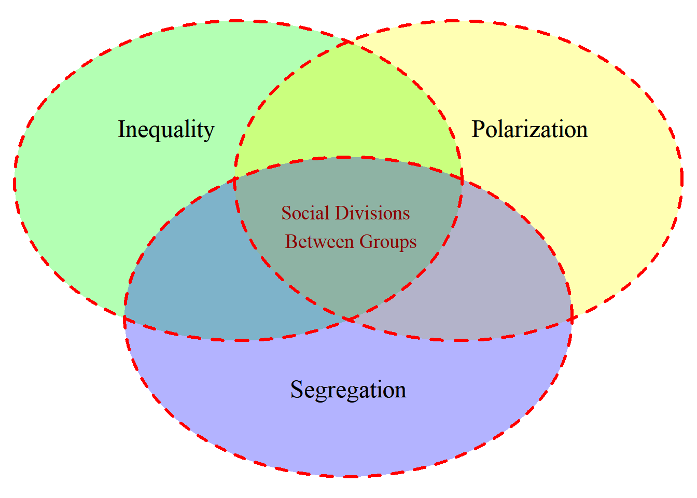

Social segregation
Intro
This website is a replication package for the presentation at JCA by @Tolsma2022.
It contains R code to replicate all the Figures.
To copy the code click the button in the upper right corner of the code-chunks.
Use the top menu to navigate to the section of interest.
The source code of this website can be found on Github
Questions can be addressed to Jochem Tolsma.
A big Thank You to `r colorize(“Thijmen Jeroense”, “red”) for preparing the LISS data!
Introduction
- My chair, supported by the James Coleman Association, has the title: Social Divisions Between Groups.

Fig 1. Social Divisions Between Groups
Inequality
The unequal distribution of resources.
Polarization
The unequal distribution of opinions.

Segregation
The unequal distribution of positions.
Why segregation?
- We don’t much about segregation:
- Is it increasing or decreasing over time?
- Along which social dimension is segregation most prominent?
- Within which social context is segregation most prominent?
- Is segregation mainly the result of polarization and inequality or the cause for polarization and inequality?
- Do we need to take action and through which policies?
- Is it increasing or decreasing over time?
References
LS0tDQp0aXRsZTogIlNvY2lhbCBzZWdyZWdhdGlvbiINCi0tLQ0KDQpgYGB7ciBnbG9iYWxzZXR0aW5ncywgZWNobz1GQUxTRSwgd2FybmluZz1GQUxTRX0NCmxpYnJhcnkoa25pdHIpDQpvcHRzX2NodW5rJHNldCh0aWR5Lm9wdHM9bGlzdCh3aWR0aC5jdXRvZmY9MTAwKSx0aWR5PVRSVUUsIHdhcm5pbmcgPSBGQUxTRSwgbWVzc2FnZSA9IEZBTFNFLGNvbW1lbnQgPSAiIz4iLCBjYWNoZT1UUlVFLCBlY2hvPUZBTFNFLCBjbGFzcy5zb3VyY2U9YygidGVzdCIpLCBjbGFzcy5vdXRwdXQ9YygidGVzdDIiKSkNCm9wdGlvbnMod2lkdGggPSAxMDApDQpyZ2w6OnNldHVwS25pdHIoKQ0KYGBgDQoNCmBgYHtyIGNvbG9yaXplLCBlY2hvPUZBTFNFfQ0KY29sb3JpemUgPC0gZnVuY3Rpb24oeCwgY29sb3IpIHsNCiAgaWYgKGtuaXRyOjppc19sYXRleF9vdXRwdXQoKSkgew0KICAgIHNwcmludGYoIlxcdGV4dGNvbG9yeyVzfXslc30iLCBjb2xvciwgeCkNCiAgfSBlbHNlIGlmIChrbml0cjo6aXNfaHRtbF9vdXRwdXQoKSkgew0KICAgIHNwcmludGYoIjxzcGFuIHN0eWxlPSdjb2xvcjogJXM7Jz4lczwvc3Bhbj4iLCBjb2xvciwgDQogICAgICAgICAgICB4KQ0KICB9IGVsc2UgeA0KfQ0KDQpgYGANCg0KYGBge3Iga2xpcHB5LCBlY2hvPUZBTFNFLCBpbmNsdWRlPVRSVUV9DQprbGlwcHk6OmtsaXBweShwb3NpdGlvbiA9IGMoJ3RvcCcsICdyaWdodCcpKQ0KI2tsaXBweTo6a2xpcHB5KGNvbG9yID0gJ2RhcmtyZWQnKQ0KI2tsaXBweTo6a2xpcHB5KHRvb2x0aXBfbWVzc2FnZSA9ICdDbGljayB0byBjb3B5JywgdG9vbHRpcF9zdWNjZXNzID0gJ0RvbmUnKQ0KYGBgDQoNCg0KLS0tDQoNCg0KIyAgSW50cm8NCg0KDQpUaGlzIFt3ZWJzaXRlXShodHRwczovL2pvY2hlbXRvbHNtYS5naXRodWIuaW8vSkNBLykgaXMgYSByZXBsaWNhdGlvbiBwYWNrYWdlIGZvciB0aGUgcHJlc2VudGF0aW9uIGF0IEpDQSBieSBAVG9sc21hMjAyMi4NCg0KSXQgY29udGFpbnMgUiBjb2RlIHRvIHJlcGxpY2F0ZSBhbGwgdGhlIEZpZ3VyZXMuDQoNClRvIGNvcHkgdGhlIGNvZGUgY2xpY2sgdGhlIGJ1dHRvbiBpbiB0aGUgdXBwZXIgcmlnaHQgY29ybmVyIG9mIHRoZSBjb2RlLWNodW5rcy4NCg0KVXNlIHRoZSB0b3AgbWVudSB0byBuYXZpZ2F0ZSB0byB0aGUgc2VjdGlvbiBvZiBpbnRlcmVzdC4gDQoNClRoZSBzb3VyY2UgY29kZSBvZiB0aGlzIHdlYnNpdGUgY2FuIGJlIGZvdW5kIG9uIFtHaXRodWJdKGh0dHBzOi8vZ2l0aHViLmNvbS9Kb2NoZW1Ub2xzbWEvSkNBKQ0KDQpRdWVzdGlvbnMgY2FuIGJlIGFkZHJlc3NlZCB0byBbSm9jaGVtIFRvbHNtYV0obWFpbHRvOmpvY2hlbS50b2xzbWFAcnUubmwpLg0KDQoNCioqQSBiaWcgKlRoYW5rIFlvdSogdG8gYHIgY29sb3JpemUoIlRoaWptZW4gSmVyb2Vuc2UiLCAicmVkIikgZm9yIHByZXBhcmluZyB0aGUgTElTUyBkYXRhISoqICANCg0KLS0tICANCg0KDQoNCg0KDQpgYGB7ciwgZWNobz1GQUxTRSwgcmVzdWx0cz0naGlkZSd9DQpmcGFja2FnZS5jaGVjayA8LSBmdW5jdGlvbihwYWNrYWdlcykgew0KICBsYXBwbHkocGFja2FnZXMsIEZVTiA9IGZ1bmN0aW9uKHgpIHsNCiAgICBpZiAoIXJlcXVpcmUoeCwgY2hhcmFjdGVyLm9ubHkgPSBUUlVFKSkgew0KICAgICAgaW5zdGFsbC5wYWNrYWdlcyh4LCBkZXBlbmRlbmNpZXMgPSBUUlVFKQ0KICAgICAgbGlicmFyeSh4LCBjaGFyYWN0ZXIub25seSA9IFRSVUUpDQogICAgfQ0KICB9KQ0KfQ0KDQpwYWNrYWdlcyA9IGMoIlZlbm5EaWFncmFtIiwgIkVudlN0YXRzIikNCg0KZnBhY2thZ2UuY2hlY2socGFja2FnZXMpDQpgYGANCg0KIyBJbnRyb2R1Y3Rpb24gDQoNCi0gTXkgY2hhaXIsIHN1cHBvcnRlZCBieSB0aGUgSmFtZXMgQ29sZW1hbiBBc3NvY2lhdGlvbiwgaGFzIHRoZSB0aXRsZTogKipTb2NpYWwgRGl2aXNpb25zIEJldHdlZW4gR3JvdXBzKiouIA0KDQoNCmBgYHtyLCBmaWcuY2FwPSJGaWcgMS4gU29jaWFsIERpdmlzaW9ucyBCZXR3ZWVuIEdyb3VwcyJ9DQoNCiMgY3JlYXRlIFZlbm4gZGlhZ3JhbSB3aXRoIHRocmVlIHNldHMNCnYgPC0gZHJhdy50cmlwbGUudmVubihhcmVhMT00MCwgYXJlYTI9NDAsIGFyZWEzPTQwLA0KCQkJCW4xMj0xMCwgbjIzPTEwLCBuMTM9MTAsIG4xMjM9NSwNCgkJCQljYXRlZ29yeT1jKCJJbmVxdWFsaXR5IiwiUG9sYXJpemF0aW9uIiwgInNlZ3JlZ2F0aW9uIiksIGNhdC5kaXN0ID0gLS4xLCBjYXQuY2V4PTEuNSwNCgkJCQljb2w9IlJlZCIsZmlsbD1jKCJHcmVlbiIsIlllbGxvdyIsIkJsdWUiKSwNCgkJCQlsd2Q9MywNCgkJCQlhbHBoYSA9IC4zLA0KCQkJCWxhYmVsLmNvbCA9ICJkYXJrIHJlZCIsDQoJCQkJY2V4PTEuMiwNCgkJCQlsdHk9MiwgDQoJCQkJaW5kID0gRkFMU0UpDQoNCiNsYXBwbHkodiwgbmFtZXMpDQojbGFwcGx5KHYsIGZ1bmN0aW9uKGkpIGkkbGFiZWwpDQp2W1s3XV0kbGFiZWwgPC0gIiINCnZbWzhdXSRsYWJlbCA8LSAiIg0KdltbOV1dJGxhYmVsIDwtICIiDQp2W1sxMF1dJGxhYmVsIDwtICIiDQp2W1sxMV1dJGxhYmVsIDwtICJTb2NpYWwgRGl2aXNpb25zIFxuIEJldHdlZW4gR3JvdXBzIg0KdltbMTJdXSRsYWJlbCA8LSAiIg0KdltbMTNdXSRsYWJlbCA8LSAiIg0KDQpncmlkLm5ld3BhZ2UoKQ0KZ3JpZC5kcmF3KHYpDQpncmlkLm5ld3BhZ2UoKQ0KDQpgYGANCg0KLS0tICANCg0KIyBJbmVxdWFsaXR5DQoNClRoZSB1bmVxdWFsIGRpc3RyaWJ1dGlvbiBvZiByZXNvdXJjZXMuIA0KDQo8aWZyYW1lIHNyYz0iaHR0cHM6Ly9qdG9sc21hLnNoaW55YXBwcy5pby9HaW5pMi8iIGhlaWdodD0iNDA1IiB3aWR0aD0iNzIwIiBzdHlsZT0iYm9yZGVyOiAxcHggc29saWQgIzQ2NDY0NjsiIGFsbG93ZnVsbHNjcmVlbj0iIiBhbGxvdz0iYXV0b3BsYXkiPjwvaWZyYW1lPg0KDQotLS0gIA0KDQojIFBvbGFyaXphdGlvbg0KDQpUaGUgdW5lcXVhbCBkaXN0cmlidXRpb24gb2Ygb3BpbmlvbnMuIA0KDQoNCmBgYHtyfQ0Kc2V0LnNlZWQoMTIzNCkNCg0KZGF0IDwtIGRhdGEuZnJhbWUoZ3JvdXAgPSBmYWN0b3IocmVwKGMoImdyb3VwIEEiLCJncm91cCBCIiksIGVhY2g9MjAwKSksIA0KICAgICAgICAgICAgICAgICAgIG9waW5pb24gPSBjKHJub3JtVHJ1bmMoMjAwLCBtZWFuID0gMSwgc2QgPSAxLCBtaW4gPSAwLCBtYXggPSA3KSxybm9ybVRydW5jKDIwMCwgbWVhbiA9IDYsIHNkID0gMSwgbWluID0gMCwgbWF4ID0gNykpKQ0KIA0KIyBEZW5zaXR5IHBsb3RzIHdpdGggc2VtaS10cmFuc3BhcmVudCBmaWxsDQpnZ3Bsb3QoZGF0LCBhZXMoeD1vcGluaW9uLCBmaWxsPWdyb3VwKSkgKw0KICBnZW9tX2RlbnNpdHkoYWxwaGE9LjMsIGtlcm5lbD0ibyIpICsNCiAgc2NhbGVfeF9jb250aW51b3VzKGJyZWFrcyA9IDA6NywgbGltaXRzID0gYygtMSw4KSAsIGxhYmVscyA9IGMoInRvdGFsbHkgZGlzYWdyZWUiLCAiIiwgIiIsIiIsICIiLCAiIiwgIiIsICJ0b3RhbGx5IGFncmVlIikpIA0KYGBgDQoNCg0KLS0tIA0KDQoNCiMgU2VncmVnYXRpb24NCg0KVGhlIHVuZXF1YWwgZGlzdHJpYnV0aW9uIG9mIHBvc2l0aW9ucy4gDQoNCiMjIFNlZ3JlZ2F0aW9uIGFsb25nIGRpZmZlcmVudCBzb2NpYWwgZGltZW5zaW9ucw0KDQoqIENsYXNzICANCiogUmVsaWdpb24gIA0KKiBFdGhuaWNpdHkgIA0KKiBBZ2UgIA0KKiBHZW5kZXIgIA0KKiBFZHVjYXRpb24gIA0KDQojIyBTZWdyZWdhdGlvbiBpbiBkaWZmZXJudCBzb2NpYWwgY29udGV4dHMuIA0KDQoqIEdlb2dyYXBoaWNhbCBhcmVhcyAgDQoqIFNjaG9vbHMgIA0KKiBXb3JrICANCiogU29jaWFsIE5ldHdvcmtzICANCg0KIyBXaHkgc2VncmVnYXRpb24/ICANCg0KLSBXZSBkb24ndCBtdWNoIGFib3V0IHNlZ3JlZ2F0aW9uOiAgDQogICogSXMgaXQgaW5jcmVhc2luZyBvciBkZWNyZWFzaW5nIG92ZXIgdGltZT8gIA0KICAqIEFsb25nIHdoaWNoIHNvY2lhbCBkaW1lbnNpb24gaXMgc2VncmVnYXRpb24gbW9zdCBwcm9taW5lbnQ/ICANCiAgKiBXaXRoaW4gd2hpY2ggc29jaWFsIGNvbnRleHQgaXMgc2VncmVnYXRpb24gbW9zdCBwcm9taW5lbnQ/ICANCiAgKiBJcyBzZWdyZWdhdGlvbiBtYWlubHkgdGhlIHJlc3VsdCBvZiBwb2xhcml6YXRpb24gYW5kIGluZXF1YWxpdHkgb3IgdGhlIGNhdXNlIGZvciBwb2xhcml6YXRpb24gYW5kIGluZXF1YWxpdHk/ICANCiAgKiBEbyB3ZSBuZWVkIHRvIHRha2UgYWN0aW9uIGFuZCB0aHJvdWdoIHdoaWNoIHBvbGljaWVzPyANCg0KLS0tICANCg0KDQojIFJlZmVyZW5jZXMNCg==
Copyright © 2022 Jochem Tolsma